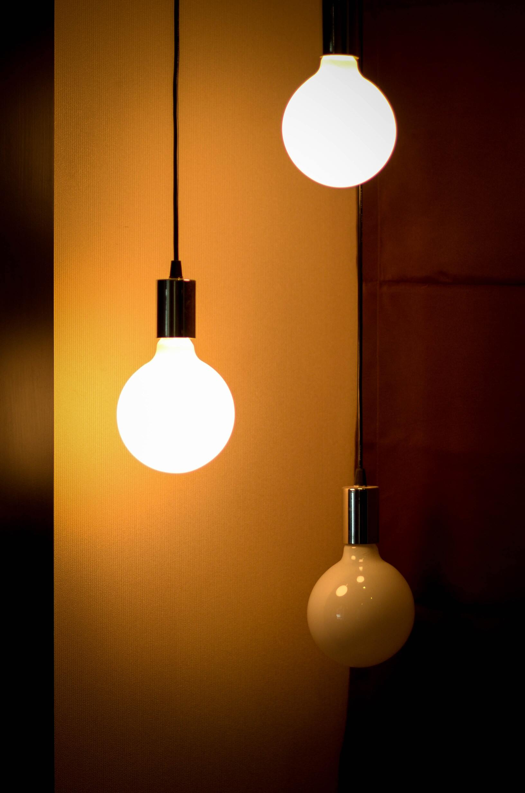
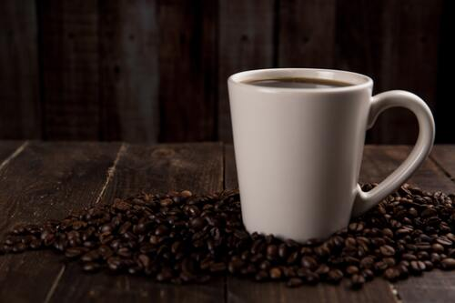
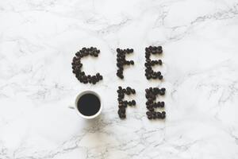
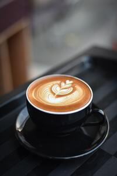
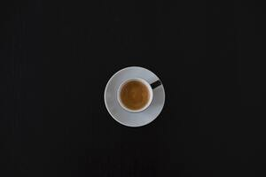
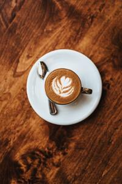

Home
About
Contact
A Warm Place for Coffee and quotes
Grab yourself some coffee, listen to some music, maybe read a book or talk to a love one!
Sign up

Some more Coffee!.

Coffee on Coffee!

Coffee on black!

Minimalist coffee!

Fancy coffee!
"It gets easier. Everyday it gets a little easier. But you gotta do it every day. That's the hard part. But it does get easier. "
-Bojack Horseman
Call to action! it's Coffee time!
sign up for coffee related products by clicking that button right over there!
Sign up